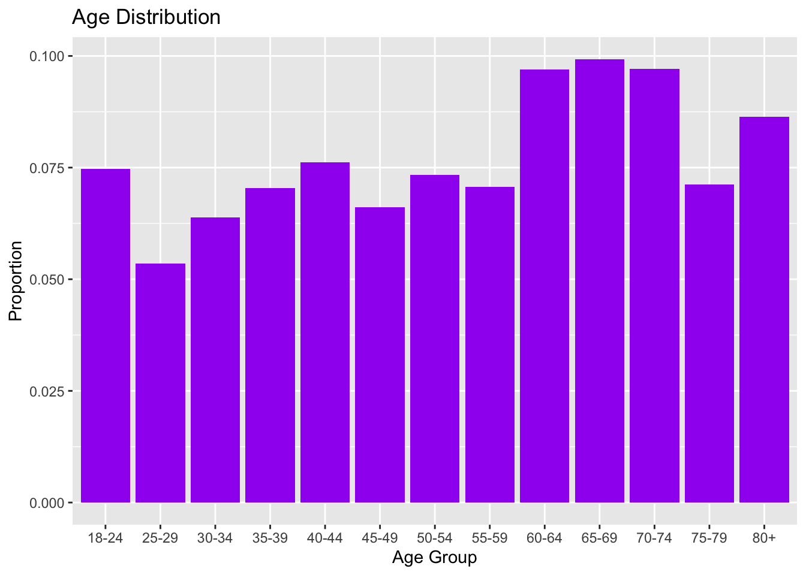

This quarto document walks through my reproducible code that analyzes the Nebraskan subset from the 2023 Behavioral Risk Factor Surveillance System (BRFSS). Make sure that the ggplot2 and tidyverse packages are installed beforehand.
Start by loading the necessary libraries:
library(ggplot2)library(tidyverse)
── Attaching core tidyverse packages ──────────────────────── tidyverse 2.0.0 ──
✔ dplyr 1.1.4 ✔ readr 2.1.5
✔ forcats 1.0.0 ✔ stringr 1.5.1
✔ lubridate 1.9.4 ✔ tibble 3.3.0
✔ purrr 1.1.0 ✔ tidyr 1.3.1
── Conflicts ────────────────────────────────────────── tidyverse_conflicts() ──
✖ dplyr::filter() masks stats::filter()
✖ dplyr::lag() masks stats::lag()
ℹ Use the conflicted package (<http://conflicted.r-lib.org/>) to force all conflicts to become errors
For the first part of the analysis, we will be analyzing the age data. The age column contains missing values, which are denoted by the value 14. Let’s the proportion of missing values in the age column:
sum(brfss$X_AGEG5YR ==14) /nrow(brfss)
[1] 0.01032128
Since only one percent of the age data is missing, it is alright to leave it out. If the percentage of missing data was higher, it could significantly affect the shape of our distribution. However, a small number of missing values should still give us the main ideas of the what the age distribution for this Nebraska subset is. So, we will continue by creating a new table, filtering out the rows that have a value of 14 in the age column:
Next to start creating the distribution, we will pivot our table to create a frequency table of the different age groups and their counts in the data. After that, dividing each count by the total number of rows, gives us the proportion we need to view the age distribution in a table.
ggplot(brfss.age, aes(x = X_AGEG5YR, y = Percent)) +geom_bar(stat ="identity", fill ="purple") +labs(title ="Age Distribution", x ="Age Group", y ="Proportion")

Nebraska Distribution Vs National Distribution
The next step in the age analysis is to test if the age distribution in Nebraska differs from the national distribution. To do this, we will perform a Chi-Squared Test of Homogeneity with 12 degrees of freedom.
We first need to add the national data to our table (found in the codebook):
From this test, we get a very large Chi-Squared statistic, which corresponds to an extremely small p-value. This leads us to reject the null hypothesis, and conclude that the age distribution in Nebraska differs significantly from the national age distribution.
Weights Analysis
Finding the Distribution
The second part of the BRFSS analysis involves analyzing the survey weights for each row. We will follow a similar process as before. First, grab the weights column and check for missing values:
Since there are none, we have nothing to worry about in that category.
To create a distribution table, we need to put the weights into bins, and then create a frequency table (including the corresponding percentages) based on those bins.
binned <- brfss.weights %>%mutate(weights_bin =cut(X_LLCPWT, breaks =30, include.lowest =TRUE, right =FALSE))weights.table <- binned %>%group_by(weights_bin) %>%summarise(Frequency =n()) %>%mutate(Percent = Frequency /sum(Frequency))print(weights.table)